ПЕРВИЧНЫЙ ВАЛ > ПОВТОРНАЯ СБОРКА |
| 1. INSTALL INPUT SHAFT FRONT BEARING |
| 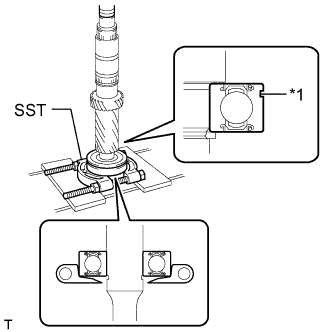 |
Using SST and a press, install the input shaft front bearing to the input shaft.
| *1 | Groove |
| 2. INSTALL INPUT SHAFT FRONT BEARING SNAP RING |
| 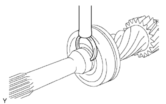 |
Select a new snap ring that will allow minimal axial play.
| Part No. | Mark | Thickness |
| 90520-31026 | A | 2.65 to 2.70 mm (0.1043 to 0.1063 in.) |
| 90520-31027 | B | 2.70 to 2.75 mm (0.1063 to 0.1083 in.) |
| 90520-31028 | C | 2.75 to 2.80 mm (0.1083 to 0.1102 in.) |
| 90520-31029 | D | 2.80 to 2.85 mm (0.1102 to 0.1122 in.) |
| 90520-31030 | E | 2.85 to 2.90 mm (0.1122 to 0.1142 in.) |
| 90520-31031 | F | 2.90 to 2.95 mm (0.1142 to 0.1161 in.) |
Using a brass bar and hammer, install the snap ring to the input shaft.
| 3. INSTALL NO. 2 TRANSMISSION CLUTCH HUB |
| 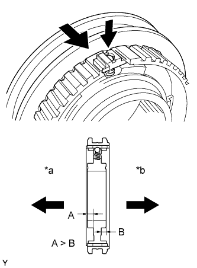 |
Apply a light coat of gear oil to the sleeve and hub.
Install the No. 2 clutch hub to the clutch hub sleeve.
| *a | 4th Gear Side |
| *b | 3rd Gear Side |
Install one of the balls to each shifting key.
Install one of the springs to each shifting key.
Install the shifting keys with balls and springs to the No. 2 clutch hub.
| 4. INSTALL NO. 3 TRANSMISSION CLUTCH HUB |
| 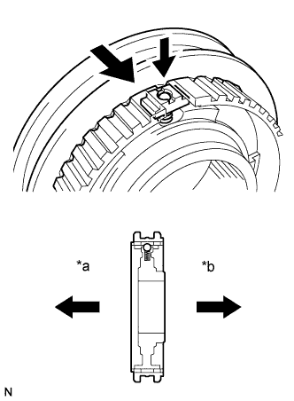 |
Apply a light coat of gear oil to the sleeve and hub.
Install the No. 3 clutch hub to the clutch hub sleeve.
| *a | 6th Gear Side |
| *b | 5th Gear Side |
Install one of the balls to each shifting key.
Install one of the springs to each shifting key.
Install the shifting keys with balls and springs to the No. 3 clutch hub.
| 5. INSTALL 4TH GEAR NEEDLE ROLLER BEARING |
| 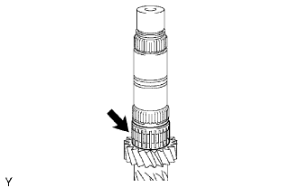 |
Coat the 4th gear needle roller bearing with gear oil, and then install it to the input shaft.
| 6. INSTALL 4TH GEAR |
Coat the 4th gear and No. 3 synchronizer ring with gear oil, and then install them to the input shaft.
| 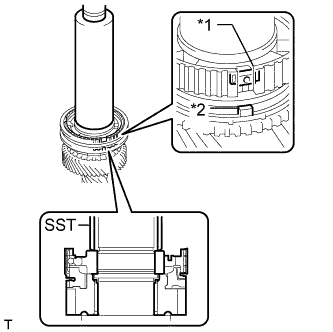 |
Using SST and a press, install the No. 2 clutch hub to the input shaft.
| *1 | Groove |
| *2 | Protrusion |
Check that the gear and synchronizer ring move smoothly.
| 7. INSTALL NO. 2 CLUTCH HUB SETTING SHAFT SNAP RING |
| 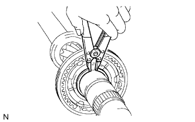 |
Select a new snap ring that will allow minimal axial play.
| Part No. | Mark | Thickness |
| 90520-42012 | A | 1.80 to 1.85 mm (0.0709 to 0.0728 in.) |
| 90520-42013 | B | 1.85 to 1.90 mm (0.0728 to 0.0748 in.) |
| 90520-42014 | C | 1.90 to 1.95 mm (0.0748 to 0.0767 in.) |
| 90520-42015 | D | 1.95 to 2.00 mm (0.0767 to 0.0787 in.) |
| 90520-42016 | E | 2.00 to 2.05 mm (0.0787 to 0.0807 in.) |
| 90520-42017 | F | 2.05 to 2.10 mm (0.0807 to 0.0826 in.) |
| 90520-42018 | G | 2.10 to 2.15 mm (0.0826 to 0.0846 in.) |
Using a snap ring expander, install the snap ring to the input shaft.
| 8. INSTALL NO. 2 SYNCHRONIZER RING SET |
| 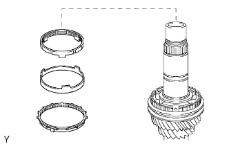 |
Coat the No. 2 synchronizer ring set with gear oil, and then install it to the input shaft.
| 9. INSTALL SPACER |
| 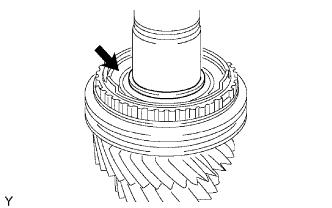 |
Coat the spacer with gear oil and install it to the input shaft.
| 10. INSTALL 3RD GEAR NEEDLE ROLLER BEARING |
| 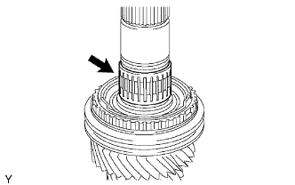 |
Coat the 3rd gear needle roller bearing with gear oil and install it to the input shaft.
| 11. INSTALL STRAIGHT PIN |
| 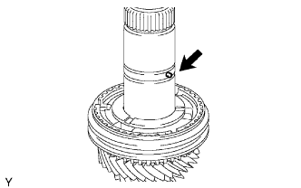 |
Install the straight pin to the input shaft.
| 12. INSTALL 3RD GEAR |
| 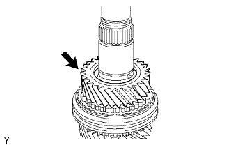 |
Coat the 3rd gear with gear oil and install it to the input shaft.
| 13. INSTALL 3RD GEAR THRUST WASHER |
| 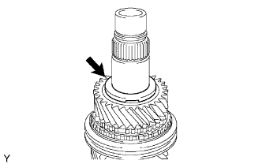 |
Coat the 3rd gear thrust washer with gear oil and install it to the input shaft.
| 14. INSTALL GEAR THRUST WASHER SHAFT SNAP RING |
| 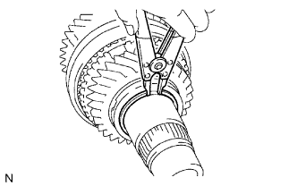 |
Select a new snap ring that will allow minimal axial play.
| Part No. | Mark | Thickness |
| 90520-39026 | A | 2.07 to 2.12 mm (0.0815 to 0.0835 in.) |
| 90520-39027 | B | 2.12 to 2.17 mm (0.0835 to 0.0854 in.) |
| 90520-39028 | C | 2.17 to 2.22 mm (0.0854 to 0.0874 in.) |
| 90520-39029 | D | 2.22 to 2.27 mm (0.0874 to 0.0894 in.) |
| 90520-39030 | E | 2.27 to 2.32 mm (0.0894 to 0.0913 in.) |
| 90520-39031 | F | 2.32 to 2.37 mm (0.0913 to 0.0933 in.) |
Using a snap ring expander, install the snap ring to the input shaft.
| 15. INSTALL SPACER |
| 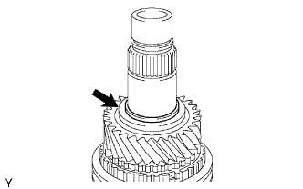 |
Coat the spacer with gear oil and install it to the input shaft.
| 16. INSTALL 6TH GEAR NEEDLE ROLLER BEARING |
| 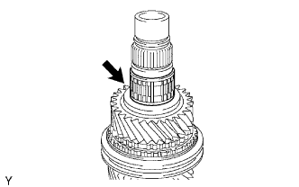 |
Coat the 6th gear needle roller bearing with gear oil and install it to the input shaft.
| 17. INSTALL 6TH GEAR SUB-ASSEMBLY |
| 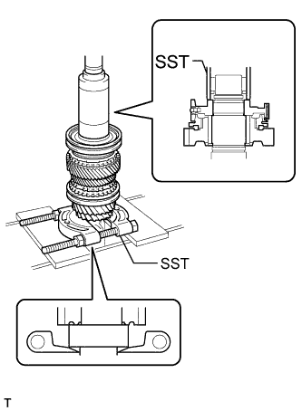 |
Install the 6th gear to the input shaft.
Install the synchronizer ring to the input shaft.
Using SST and a press, install the clutch hub to the input shaft.
Check that the gear and synchronizer ring move smoothly.
| 18. INSTALL NO. 3 TRANSMISSION CLUTCH HUB SHAFT SNAP RING |
| 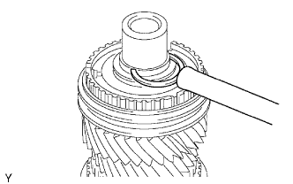 |
Select a new snap ring that will allow minimal axial play.
| Part No. | Mark | Thickness |
| 90520-33022 | A | 2.10 to 2.15 mm (0.0827 to 0.0847 in.) |
| 90520-33023 | B | 2.15 to 2.20 mm (0.0847 to 0.0866 in.) |
| 90520-33024 | C | 2.20 to 2.25 mm (0.0866 to 0.0886 in.) |
| 90520-33025 | D | 2.25 to 2.30 mm (0.0886 to 0.0906 in.) |
| 90520-33026 | E | 2.30 to 2.35 mm (0.0906 to 0.0925 in.) |
| 90520-33027 | F | 2.35 to 2.40 mm (0.0925 to 0.0945 in.) |
| 90520-33028 | G | 2.40 to 2.45 mm (0.0945 to 0.0965 in.) |
Using a brass bar and hammer, install the snap ring to the input shaft.
| 19. INSPECT 6TH GEAR THRUST CLEARANCE |
| 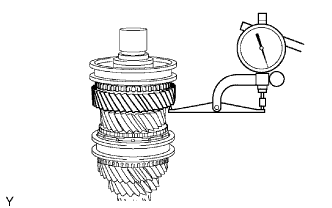 |
Using a dial indicator, measure the 6th gear thrust clearance.
| 20. INSPECT 3RD GEAR THRUST CLEARANCE |
| 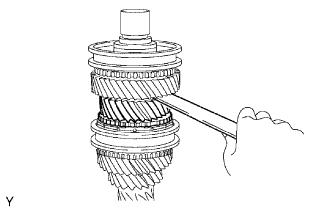 |
Using a feeler gauge, measure the 3rd gear thrust clearance.
| 21. INSPECT 4TH GEAR THRUST CLEARANCE |
| 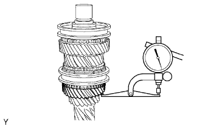 |
Using a dial indicator, measure the 4th gear thrust clearance.
| 22. INSPECT 6TH GEAR RADIAL CLEARANCE |
| 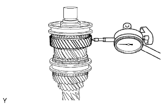 |
Using a dial indicator, measure the 6th gear radial clearance.
| 23. INSPECT 3RD GEAR RADIAL CLEARANCE |
| 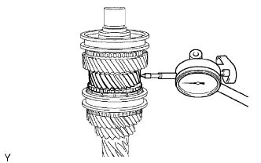 |
Using a dial indicator, measure the 3rd gear radial clearance.
| 24. INSPECT 4TH GEAR RADIAL CLEARANCE |
| 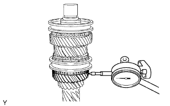 |
Using a dial indicator, measure the 4th gear radial clearance.